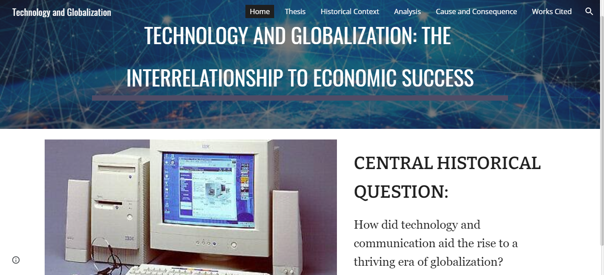
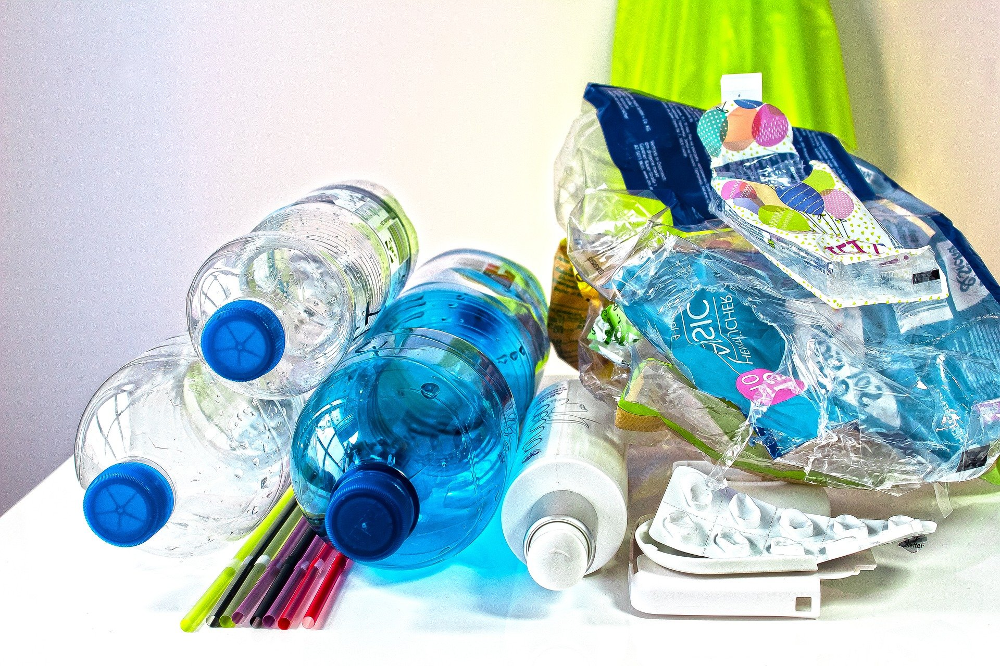

Soap Business Project
For a sophomore project, everyone in our grade had to work in groups to create their own business marketing and producing soap. My members and I split up the workload between us. One finished making our floral soap and the packaging with some assistance; another focussed on our marketing strategy and wrote the sales pitch; and I worked on the financial aspect and designed our business' website with Google Sites.
"Just My Luck" Game
I attempted using Construct for the first time to make a platformer game in 3 days as my submission to Virtual Codeday Winter 2021. It had also been my first time participating in a hackathon-type event. It was a nice learning experience!
History Research Website
For US History class, I created another website but this time, it was for a research project. The goal of the assignment was to answer the unit's inquiry question, "How did the US become an economic superpower?" by researching a sub-topic of our choice. The topic I chose was technology and globalization.
Project Smile
I am the vice president of Project Smile, my high school's recycling club that my friends and I founded in Sophomore year. In addition to helping the Earth, our club donates all our profit to Operation Smile, an organization which funds surgeries for children with cleft palate.

Photography
I have been a part of my school's yearbook photography team to capture school events and daily life. I also enjoy taking pictures of beautiful skies.